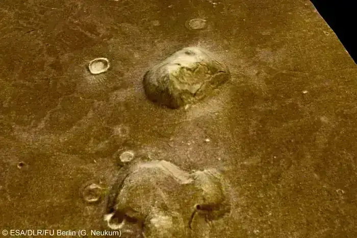
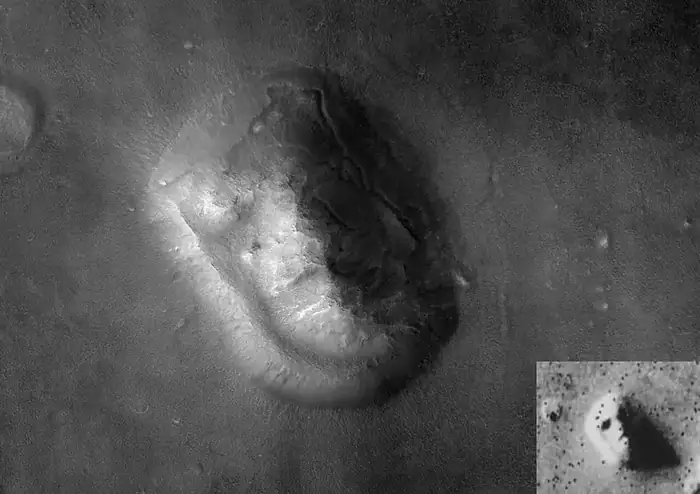

The image
In 1976 NASA released a Viking 1 image of the Cydonia region showing a mesa with what looked like a face: two eye-like depressions, a nose and a mouth. The image was about 43 metres per pixel, taken in low-angle sunlight that produced strong shadows, and there was only one of it.
Maps, diagrams and images



The resemblance was seized on by writers who argued it was artificial — a monument, a marker, evidence of a lost Martian civilisation. NASA was accused of concealing the rest of the frames.
The later pictures
In 1998 the Mars Global Surveyor imaged the same feature at about 1.5 metres per pixel, in different lighting. It is a natural mesa, eroded and partially buried, with no symmetry and no facial geometry. Further images in 2001 and after, from several spacecraft and at higher resolution still, confirmed the reading. The 'other' frames were released; they show the same hill.
The mechanism is pareidolia: the human visual system is tuned to find faces, and it finds them in noise, clouds, rock and toast. Low resolution removes the detail that would break the illusion, and a single viewing angle supplies the shadows that complete it.
Documented: the feature is a natural mesa, imaged at high resolution from multiple angles.
Documented: the original image was low-resolution, single-angle, and shadow-heavy.
Documented: the resemblance disappears at higher resolution.
Not established: any artificial structure, or any concealment by NASA.
The lesson: pareidolia is not a failure of intelligence — it is a feature of perception that misfires on ambiguous input.
Why it is in the archive
Because it is the cleanest demonstration in the collection of how a single low-information observation becomes a monument. Every step — the low resolution, the one angle, the shadow, the human face-detector — is ordinary, and the conclusion was extraordinary.
Open resources on this topic
- BookThe Face On Mars — Dirk Gillabel · 2019 (Internet Archive, free to read)
- BookClose Up Unveil The Face On Mars (Internet Archive, free to read)
- BookThe NASA conspiracies : the truth behind the moon landings, censored photos, and the face on Mars — Redfern, Nicholas, 1964- · 2011 (Internet Archive, free to read)
- PapersOpen-access articles: DOAJ · PubMed Central · Internet Archive Scholar
- BooksPublic-domain and borrowable copies: Open Library · Project Gutenberg · Google Books
Cite this page
Momin, S. (2026). The Face on Mars. The Larger World Archive. https://drsamonline.github.io/LARGE_GLOBE/face-on-mars.htmlMomin, Sohil. “The Face on Mars.” The Larger World Archive, 2026, https://drsamonline.github.io/LARGE_GLOBE/face-on-mars.html.Momin, Sohil. “The Face on Mars.” The Larger World Archive, 2026. https://drsamonline.github.io/LARGE_GLOBE/face-on-mars.html.@misc{the2026face,
author = {Momin, Sohil},
title = {The Face on Mars},
year = {2026},
howpublished = {The Larger World Archive},
url = {https://drsamonline.github.io/LARGE_GLOBE/face-on-mars.html},
note = {Last reviewed 20 November 2026}
}Last reviewed 20 November 2026 · Corrections policy · this page is not peer reviewed
Sources for this page
- Wikipedia, “Cydonia (Mars)” — the region, the mesa and the imagesen.wikipedia.org
- Wikipedia, “Pareidolia” — why faces appear in noiseen.wikipedia.org
- Wikipedia, “Viking 1” — the mission and the 1976 imageen.wikipedia.org
- Wikipedia, “Mars Global Surveyor” — the 1998 re-imagingen.wikipedia.org